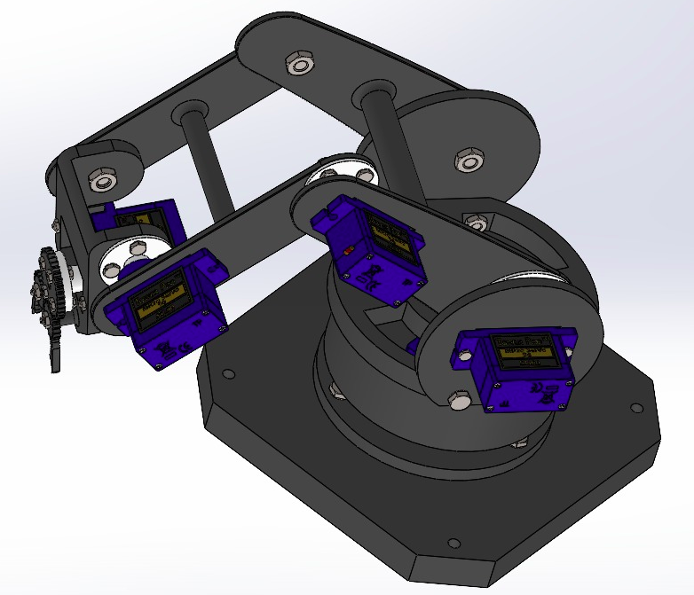
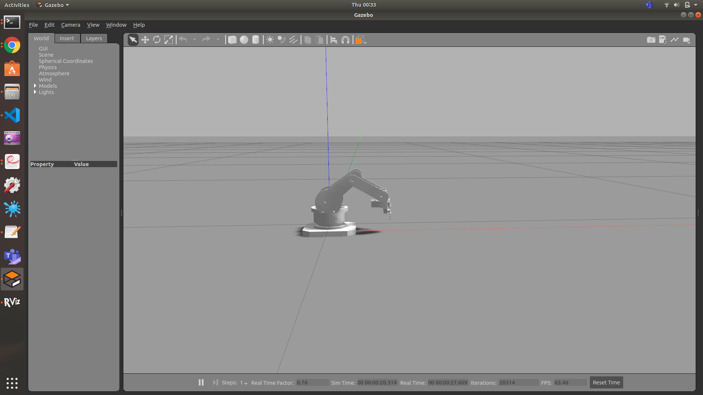

fig 1:Cutlery Sorting Arm
This is fully ROS integrated 4 DOF robotic arm, with a base that is capable of yaw motion and the other 3 DOF's are planar.It's main purpose is to sort cutlery like spoon,forks,chopsticks etc.This project was done in collaboration with NTU,Singapore.
I have worked on arm control for which I used move_it and ROS framework.Cutlery identification was done using an on arm-camera and Deep Learning based Models.
The complete package including the URDF and move_it files can be found at Cutlery Sorting Arm.
The arm control is a implementation of move_it planning framework on a custom URDF.Also we have used a custom IK algorithm as there was no IK solver algorithm for 4 DOF arm in move_it
A small demo is given beliow showing the working of arm control.
fig 2: ABCD
We have made a custom design using Solid Works and conducted multiple tests in simulators like Gazebo,Pybullet for ensuring it's physical capabilities.
We use Mask R-CNN, or Region-Based Convolutional Neural Network which is capable of achieving state-of-the-art results on a range of object detection tasks.So,basically the model tells the positon and type of object to ROS framework which then calculates start and end goal accordingly.

fig 3:Object Identification in Gazebo